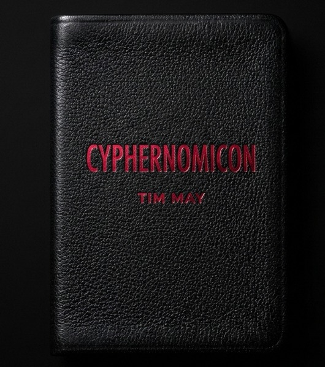

The Cyphernomicon.
Timothy C. May's sprawling, unfinished manifesto-FAQ of the Cypherpunks mailing list — 20 sections, ~700 questions, and the clearest statement anyone wrote of what strong cryptography would do to states, money, and identity. This edition makes the outline navigable, searchable, and readable end to end.

Table of Contents
In September 1994, Timothy C. May sat down and tried to write everything he knew into one file. He called it The Cyphernomicon, half-joking — a portmanteau of "cypher" and the fictional grimoire from Lovecraft, a FAQ so long it verged on forbidden text. It runs to hundreds of questions across twenty sections, written in the outline editor he liked on his Mac, in the voice of a man arguing with a mailing list of a few hundred people who thought, mostly correctly, that they were about to change what money and speech and identity meant.
That list was the Cypherpunks. They had formed two years earlier, in the fall of 1992, around a simple and at the time almost unbelievable proposition: that strong cryptography, distributed freely and used without permission, could do more for individual liberty than any law ever would. Their slogan, coined by Eric Hughes, still holds up better than most manifestos of any decade — "Cypherpunks write code." Not petition. Not persuade. Write code, and ship it, and let the mathematics do the arguing.
You'll find the whole fight preserved here in real time: the Clipper Chip and key escrow, the export-control battles that treated cryptographic source code as a munition, the anonymous remailers built over a weekend of Perl, PGP spreading against the wishes of the agencies that would have preferred it stayed classified. And you'll find, tucked into Section 12, something that reads almost eerie in hindsight — pages of May and his correspondents working through David Chaum's blind signatures, the double-spending problem, and the question that digital cash could never quite answer in 1994: how do you stop the same digital coin from being spent twice, without a bank sitting in the middle to check?
Nobody in this document solves that problem. They circle it for a hundred pages. Hal Finney — quoted here explaining Chaum's protocols to a confused list member — would spend the next decade and a half still circling it, before becoming, in January 2009, the second person on earth to run Bitcoin software and the recipient of its first transaction. Satoshi Nakamoto never claimed to have invented cryptographic money from nothing. The proof-of-work idea, the distrust of trusted third parties, the conviction that money is a protocol problem and not a policy problem — all of it is cypherpunk thinking, and a meaningful share of it is sitting in the file you're about to read. Bitcoin is what happened when someone finally closed the loop this list left open.
I'm publishing this interactive edition because I think that lineage gets forgotten by people who came to Bitcoin through a price chart. It's easy to treat sound money as though it arrived from nowhere in a 2008 PDF. It didn't. It came out of a specific, argumentative, occasionally paranoid, occasionally prophetic community that spent years insisting — against nearly everyone's intuition at the time — that privacy is a right you have to build, not one you get handed, and that a state's ability to seize, inflate, or surveil your money is a technical problem with a technical answer. Read Section 16, "Crypto Anarchy," and you're reading the ideological skeleton that self-custody, permissionless transactions, and "not your keys, not your coins" still hang on today. None of this is offered as gospel. May was wrong about plenty — some of his predictions in Section 17 aged badly, and the document is unapologetically a snapshot of one strong-willed person's views, not a consensus. He said as much himself: this was the FAQ he wanted written, not the official one. That's worth keeping in mind as you read it. It's a primary source, not a scripture.
A word on the text itself: I haven't rewritten a sentence of May's original. What you're reading has been restructured — the outline format is now a navigable, searchable tree instead of a wall of plain text — but the words are his, copyright his, and reproduced here the way every mirror of this document has reproduced it for thirty years: as a historical and educational reference, with credit, and without putting anyone else's name on his words. The interactive shell around it — the design, the search, this foreword — is mine, and I've put it under the MIT license so anyone can fork it, improve it, or build the next layer on top. That felt like the right way to honor a document that was, itself, an argument for building in the open.
— Setvin Noether (SauerNinja)